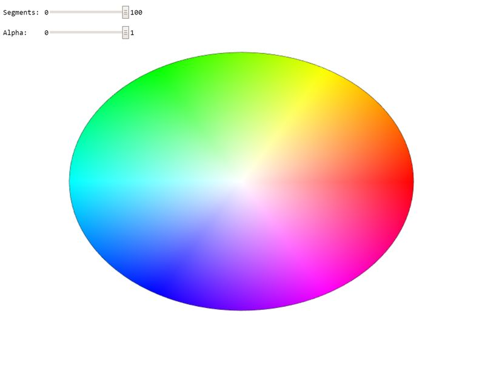

New Jersey Institute of Technology: CS 438 002
Interactive Computer Graphics Spring 2020
Assignment 1
Author: Last Name, First Name, Student Number
Date: 1/31/2020
Due: 2/12/2020
Go to Assignemt Home | Task 1 | Task 2 | Task 3
Task 2 (8 points)
Search for TODO_A1 in the JS file to find all tasks in the code!
Circle drawing and color interpolation:
2a: Create a circle geometry which can be rendered using a TRIANGLE_FAN. Use the arguments of the function to specify the radius of the circle and the number of linear segments to approximate it (3 points). Interpolate the color values on the circle linearly using the HUE of the HSV color-space (use function hsvToRgb(.,.,.)) (2 points).
2b: Adapt the rendering function to render the circle geometry using a TRIANGLE_FAN. Use the same geometry to render a black outline of the circle using a LINE_STRIP. Take care of proper management of the attributes using gl.enableVertexAttribArray(colorAttribLocation) and gl.disableVertexAttribArray(colorAttribLocation); (2 points). Your result should look like on the image below.
2c: Why is the displayed circle not round? Explain in the documentation below (1 point).
WebGL Canvas
Documentation
To make the circle geometry, I first entered the origin of the circle being (0,0) into the points array along with (1,1,1) into the color array for the basic colors. Every triangle created through the triangle fan will use this starting origin and build around the center point to form a circle. The more segments, the more rounded the circle will appear. By interpolating the color values of the circle using the HUE of the HSV color-space, I was able to get the circle to get the color of the image shown above.
As for the rendering function, I used the TRIANGLE_FAN property when drawing the raw data in the arrays to form a triangle fan that will look like a circle the more triangles that are added. I also made sure to use the LINE_STRIP property to draw a line around the circle after rendering the triangle fan. By enabling the color attribute before rendering the triangle fan, this allowed me to apply the color attribute to the triangle fan. By disabling the color attribute before rendering the line strip, this allowed me to draw a black line around the triangle fan without giving it the color attribute.
The displayed circle is not round because it is not a circle, but instead a triangle fan. This means that it is truly never round in reality, but seems rounded to the human eye when enough triangles are added to it. The outer edge of the "circle" is never truly rounded because it is simply made up of triangles.
Happy Coding !
Instructor: Assoc. Prof. Dr. Przemyslaw Musialski
Email: przemyslaw.musialski@njit.edu
Grader :Ashish Kumar(ak2633@njit.edu)